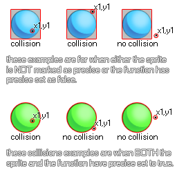

collision_point
Checks a specific, user defined point for a collision with the an instance of the chosen object.
Syntax :
collision_point( x, y, obj, prec, notme );
| Argument | Description |
|---|---|
| x | The x coordinate of the point to check. |
| y | The y coordinate of the point to check. |
| obj | The object to check for instance collisions. |
| prec | Whether the check is based on pixel-perfect collisions (true = slow) or its bounding box in general (false = fast). |
| notme | Whether the calling instance, if relevant, should be excluded (true) or not (false). |
Returns : Instance id or noone
Description
Collision point checks the point specified by the arguments x1,y1 for a collision with any instance of the object specified by the argument "obj". this check can be either precise or not, but for precise
collisions to be enabled, the object or instance that you are checking for must also have precise collisions enabled for their sprite. If not, the default check is based on bounding boxes. The following image
illustrates how this works:

Remember, for precise collisions to be considered both the object sprite and the collision function must have precise marked as on. It should also be noted that the return value of the function can be the
id of any one of the instances considered to be in collision, so if three instance overlap at that point, any one of their ids could be the return value of the function.
Example :
if collision_point(x, y, obj_Cursor, false, true)
{
Score += 10S;
}
Here we are checking the point at the position of the object that has the code for the object "obj_Cursor". If there is one, then we add 10 onto the score variable.